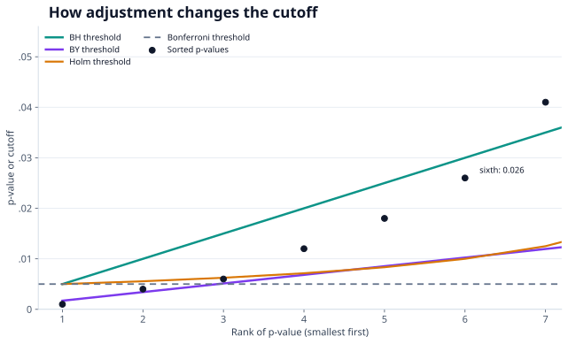

Multiple hypothesis testing
The more hypotheses we test, the easier it is to mistake chance for a discovery. Different procedures control different kinds of error across the whole family of tests.
Why one $p$-value is not enough
Imagine screening 100 investment strategies and testing whether each has a positive return beyond chance. Even if none has a real effect, a test at level $\alpha=0.05$ can falsely reject its null. If all 100 nulls are true and the tests are independent, the number of false rejections $V$ follows a binomial distribution:
With $M=100$, this probability is $1-0.95^{100}\approx99.4\%$. The calculation is an illustration, not a general formula for dependent tests or a mixture of true and false nulls. Financial strategies often share data and exposures, so their test statistics may be correlated. We still need to ask which family of strategies was searched, including unsuccessful ones.
Three ways to define the error
Let $R$ be the number of rejected hypotheses, and $V$ the number of those rejections whose null hypotheses were actually true. We cannot directly observe $V$ in real data, but can design procedures that control its behavior over repeated studies.
| Target | Definition | Question it answers |
|---|---|---|
| Family-wise error rate (FWER) | $\Pr(V\geq1)$ | How likely is even one false discovery? |
| False discovery proportion (FDP) | $V/\max(R,1)$ | What fraction of the reported discoveries is false in this run? |
| False discovery rate (FDR) | $\mathbb{E}[\mathrm{FDP}]$ | What is the average false-discovery proportion over repeated runs? |
FWER control targets $\Pr(V\geq1)\leq\alpha$. A high-probability FDP guarantee instead targets $\Pr(\mathrm{FDP}>\gamma)\leq\alpha$: the chance that the false fraction exceeds $\gamma$ is at most $\alpha$. FDR control targets $\mathbb{E}[\mathrm{FDP}]\leq q$. An FDR of 5% is an average over repeated analyses, not a promise that each individual list contains at most 5% false discoveries.
FWER: Bonferroni and Holm
Bonferroni rejects hypothesis $i$ only when $p_i\leq\alpha/M$. For ten tests at $\alpha=0.05$, every p-value must be at most 0.005. The guarantee follows from the union bound and does not require independent tests, provided each individual p-value is valid.
Holm first sorts the p-values $p_{(1)}\leq\cdots\leq p_{(M)}$. It compares the smallest with $\alpha/M$, the next with $\alpha/(M-1)$, and so on. It stops at the first failure; only earlier hypotheses are rejected:
Holm also controls FWER under arbitrary dependence and is never less powerful than Bonferroni for the same set of valid p-values.
FDR: Benjamini–Hochberg and Benjamini–Yekutieli
Benjamini–Hochberg (BH) is a step-up rule. For ordered p-values, find the largest rank $j^*$ satisfying $p_{(j)}\leq jq/M$, then reject ranks $1$ through $j^*$. Do not stop at an earlier failed rank: the rule searches for the largest qualifying one. BH controls FDR under independent tests and certain positive-dependence conditions, but not arbitrary dependence.
Benjamini–Yekutieli (BY) uses the same step-up logic, but divides the BH cutoff by the harmonic sum $H_M=\sum_{r=1}^{M}1/r$. Its stricter cutoff controls FDR under arbitrary dependence:
One set of p-values, four answers
Suppose the ten ordered p-values are 0.001, 0.004, 0.006, 0.012, 0.018, 0.026, 0.041, 0.090, 0.300, and 0.700. At 5%, the methods make different choices:
| Method | Rejections | Reason at the boundary |
|---|---|---|
| Bonferroni | 2 | Third p-value, 0.006, exceeds 0.005. |
| Holm | 3 | Third passes 0.05/8 = 0.00625; fourth fails 0.05/7. |
| BH | 6 | Sixth passes 6 × 0.05/10 = 0.030; no higher rank passes. |
| BY | 1 | With $H_{10}\approx2.929$, second fails its cutoff of about 0.00341. |

Controlling the realized fraction: FDP-StepM
The FDP-StepM approach targets a tail probability, such as $\Pr(\mathrm{FDP}>0.10)\leq0.05$, rather than only the expected FDP. It builds on $k$-FWER procedures, where $k$-FWER is $\Pr(V\geq k)$. A $k$-StepM stage allows more rejections as $k$ increases while controlling the chance of at least $k$ false ones.
Start with $k_1=1$. At stage $j$, run $k_j$-StepM and let $R_j$ be its number of rejections. Stop when $R_j<k_j/\gamma-1$; otherwise increase $k_j$ by one and run the next stage. For $\gamma=0.10$, the first stopping threshold is 9: if the first stage finds 12 discoveries, the procedure continues. The actual rejection set needs the underlying $k$-StepM calculations, often based on resampling the joint test statistics. It cannot be reconstructed from the threshold rule alone or from a list of marginal p-values.
Choosing a procedure
If even one false claim is costly, FWER control is a natural target. If screening many possible signals is the goal, an FDR target may allow more discoveries, with a different guarantee. High-probability FDP control directly limits the chance that the realized false fraction is too large, but can require more elaborate modeling of dependence.
Define the family of tests and error target before looking at results. In finance, testing many strategy variants and then reporting only the winner hides the size of the search. The same issue appears after ANOVA if many post-hoc group comparisons are made.